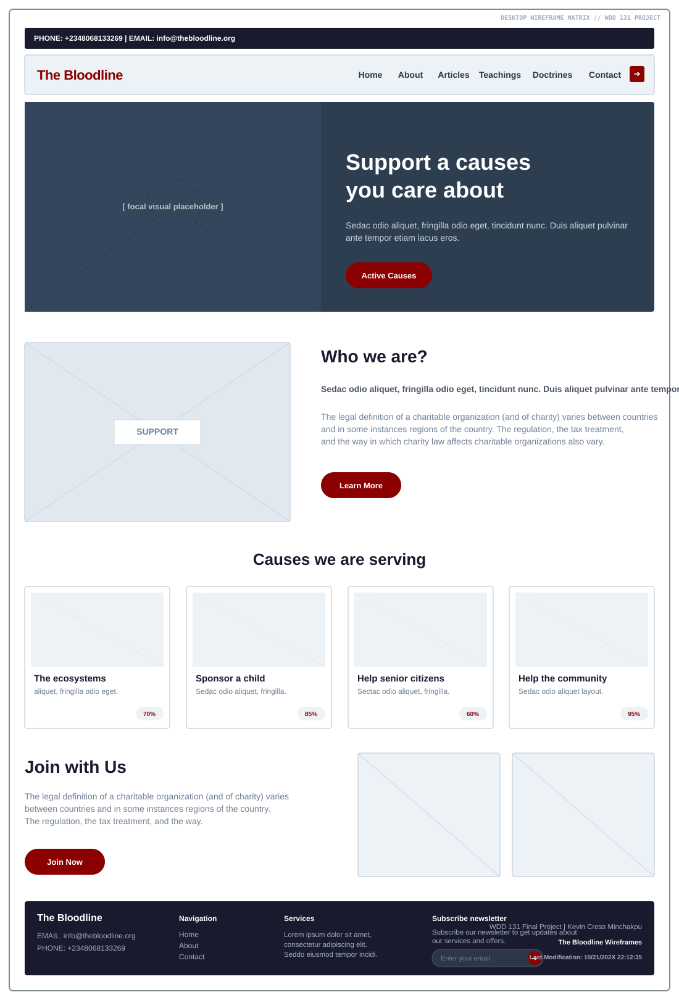
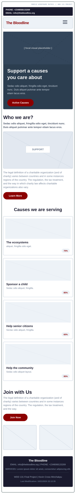

Overview & Project Metadata
The Bloodline is a faith-based family resource website designed to promote strong family values, healthy relationships, and Christ-centered living. The platform will provide educational resources, inspirational content, and practical tools that help individuals and families build stronger homes and lasting relationships.
- Project Timeline: Development will occur progressively from week 4 through week 7 of the course.
- Development Model: The website will be independently designed and developed using HTML, CSS, JavaScript, and responsive web design principles.
- Wireframes: Wireframes illustrate the structure and layout of the landing page for both desktop and mobile views.
Site Identity
Site Name: The Bloodline
Site Purpose
The Bloodline exists to strengthen families by providing uplifting, faith-centered resources on marriage, dating, parenting, youth development, communication, and family unity. Inspired by gospel-centered principles, the website seeks to help individuals create loving homes rooted in faith, respect, and eternal values.
Target Audience & Goals
Target Audience: Young adults, couples, parents, youth, church members, and individuals seeking guidance on building strong and healthy family relationships.
Site Goals
- Provide faith-based teachings and practical advice that strengthen marriages and family relationships.
- Create a supportive online environment where users can access resources for parenting, dating, communication, and emotional well-being.
- Encourage individuals and families to apply gospel-centered principles in their daily lives.
- Promote unity, love, responsibility, and spiritual growth within the home.
User Scenarios
- Scenario 1: A newly married couple visits the website looking for guidance on building a strong and lasting marriage rooted in faith and communication.
- Scenario 2: A parent searches for uplifting resources and activities that can help strengthen family relationships and teach gospel-centered values to their children.
- Scenario 3: A young adult preparing for marriage visits the site to learn about healthy dating, emotional maturity, and preparing for family life.
- Scenario 4: A struggling family seeks inspirational articles and counseling resources to improve communication, resolve conflict, and rebuild unity in the home.
Search Engine Optimization (SEO) Plan
- Use family-centered and faith-based keywords throughout articles, headings, and page descriptions.
- Create meaningful blog content related to marriage, parenting, family values, and relationships.
- Optimize all images and pages for accessibility and mobile responsiveness.
- Implement Google Analytics to monitor visitor engagement and improve content performance.
- Encourage backlinks from faith-based communities, family organizations, and educational platforms.
Design Brief (Typography & Color Palette)
The design of The Bloodline will reflect warmth, peace, unity, and spirituality. The color palette and typography are chosen to create a welcoming and uplifting atmosphere for families and individuals.
Primary Color
#005F73Secondary Color
#EE9B00Background Color
#F8F9FAText Color
#222222Typography
Heading Font: Play
Body Font: Open Sans
Wireframe Architectural Layout
Desktop View

Mobile View
